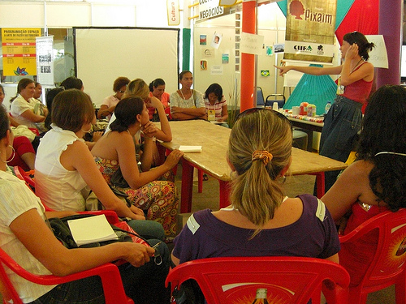
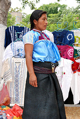

Empresarias Hispanas en Liderazgo
El Diario NY 
Las empresarias hispanas celebran este mes el primer año de servicio a la comunidad, un año en el que han conocido mejor las necesidades del sector empresarial femenino y han podido también cubrir en parte algunas de esas necesidades, según afirmó Liliana Carrillo, directora ejecutiva. Carrillo agregó que el 28 de octubre celebran su primer aniversario.
Empresarias Hispanas en Liderazgo Inc., nació como un capítulo de la Cámara de Comercio Hispana de Queens, pero ante las necesidades de desarrollo y crecimiento de la organización se independizaron y se constituyeron como una organización sin fines de lucro, cuyo principal objetivo es la educación y orientación de las hispanas con idea de negocio o negocio establecido. El crecimiento de esta organización se refleja en la cantidad de miembros que asisten a sus actividades y cuyo número no es menos de 30 en cada sesión. Semanalmente ofrecen charlas o conferencias gratuitas de temas referidos al ámbito empresarial y familiar, un tema que para las mujeres empresarias debe ir ligado a los negocios, indicó Liliana Henao coordinadora educativa.
Actividades
Los desayunos y rueda de prensa que se realizan los dos últimos jueves de cada mes es una de las más importantes actividades que realiza este grupo, debido a que en ella los asistentes tienen la posibilidad de escuchar a conferencistas invitados quienes exponen temas de interés empresarial y además tienen la posibilidad de promocionar sus productos o servicios en la rueda de negocios.
Empresarias Hispanas en Liderazgo Inc. ofrece entre sus diferentes servicios la posibilidad de certificarse como niñera y dar el primer paso para iniciar un negocio. Asimismo a partir del próximo mes ofrecerán la posibilidad de iniciar un negocio a través del desarrollo de manualidades.
Asesoría
 Otra gran labor de Empresarias Hispanas es el Programa Funda empresa, donde las personas con idea de negocio, pueden comprobar la viabilidad o posibilidad de su proyecto, conocer su fortaleza como empresario, desarrollar su plan de negocios y sobre todo contar con la asesoría adecuada para la constitución de su empresa y el logro de financiamiento. Este es un programa educativo dedicado no sólo a la mujer empresaria sino al público hispano en general debido a la gran expectativa que ha logrado en este sector. Esta organización liderada por cuatro hispanas trabaja diariamente para mejorar el nivel de las mujeres en nuestra comunidad y han logrado acuerdos de integración con diferentes organizaciones. Por ejemplo con Queens Air Services Development Office que es una organización encargada de brindar información y asesoría para conseguir contratos con los aeropuertos JFK y la Guardia. También ha logrado un acuerdo con Queens Economic Development Corporation que ofrece asesoría para el establecimiento de negocios. Entre otras organizaciones se encuentran Acción New York, organización dedicada a la educación financiera y asesoramiento de crédito, Asociación internacional de Franquicias, U.S. Securities and Exchange Comisión, oficina dedicada a la educación y asistencia de los inversionistas, YES Education y Master Therapy que son entidades dedicadas la educación familiar.
Invitación
Para celebrar su primer aniversario ’Empresarias Hispanas en Liderazgo’ invita a los interesados a participar de sus desayunos y rueda de negocios que se realizarán los dos últimos jueves de este mes en el restaurante Angie’s ubicado en la 41-46 de la calle 54, Woodside Queens, a pa